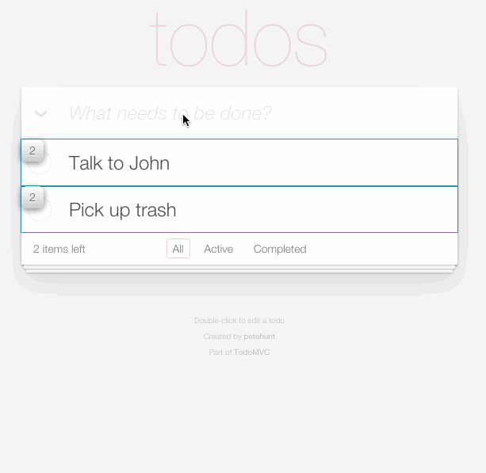

Respectable React Components
Performant React Components
Good news!
Many of the ways you can make your React code more performant, actually makes it more maintainable too.
But I’ve heard React is already really performant
...seriously, people go on and on about it.
React is very efficient at DOM manipulation
But there are other ways to inadvertently slow down your app.
React 101: Props
The public API of your component
var Hello = React.createClass({
render() {
return <h1>Hello {this.props.name}</h1>;
}
});
<Hello name="Fitzwilliam Reactable III" />
// <h1>Hello Fitzwilliam Reactable III</h1>
React 101: State
The internal ... state ... of your component
update() { this.setState({ checked: true }) }
render() {
return <input checked={this.state.checked} />;
}
Virtual DOM
A javascript representation of the DOM output of your components
<UserInfo>
<UserName name="Fitzwilliam" />
</UserInfo>
// <div> Hello <span>Fitzwilliam</span> </div>
<UserInfo>
<UserName name="FitzFromTheBlock" />
</UserInfo>
// <div> Hello <span>FitzFromTheBlock</span> </div>
Virtual DOM
- When updates happen, React's virtual DOM can determine the changes by diffing the original DOM with the re-computed one.
- Once the differences are established, React can update the browser DOM as efficiently as possible.
- ~*~*~*~ performance ~*~*~*~
But remember
Every time you update a component you’re re-computing that component inside React. Critically, you’re also re-computing its children, and grandchildren, and so on.
shouldComponentUpdate(nextProps, nextState) {
return duh;
}
By default
shouldComponentUpdate(nextProps, nextState) {
return true;
}
So, basically
shouldComponentUpdate helps you avoid computing your render tree when you don't need to
PureRenderMixin
How to use it
var PureRenderMixin = React.addons.PureRenderMixin;
var Heading = React.createClass({
mixins: [PureRenderMixin],
render() {
return <h1>{this.props.text}</h1>;
}
});
PureRenderMixin
What it actually does
var ReactComponentWithPureRenderMixin = {
shouldComponentUpdate: function(nextProps, nextState) {
return !shallowEqual(this.props, nextProps) ||
!shallowEqual(this.state, nextState);
}
};
PureRenderMixin isn't the catchall you're looking for
There are non-comparable values that defeat it. For example:
this.props.children- Functions where a new reference is passed each time
<Foo something={e => dosomething()} />
<Foo onClick={this.blah.bind(this)} />
Immutable data gives you confidence
If values change you always get a new reference.
React.addons.Perf
var Perf = React.addons.Perf;
Perf.start();
React.render( <MyApp />, element );
Perf.stop();
Perf.printInclusive(); // Prints the overall time taken.
Perf.printExclusive(); // Time excluding mounting
Perf.printWasted(); // Time spent on components that
// didn't render anything
Detect wasted time
Run Perf.start() from the console, interact with your app, and then run Perf.stop(); Perf.printWasted()

React Render Visualizer

Facebook's first open source React component
NOT A REAL SCROLLBAR
Loads in only the rows currently in the viewport, and a buffer to ease scrolling. Then update state of visible rows when the scroll event fires.
Consider only rendering what the user can see
To sum up
- shouldComponentUpdate? Ideally not.
- PureRenderMixin is pretty great
- Immutable Data will make your life better
- Performance tools are your friend
- Only render what you need to (level 80)
- But also…
- How you stucture and compose your components will
have a big imapct on how it performs
Jason Bonta did a talk on this which is better.
Special thanks to Cam, Pieter, & Kat for the help and advice <3